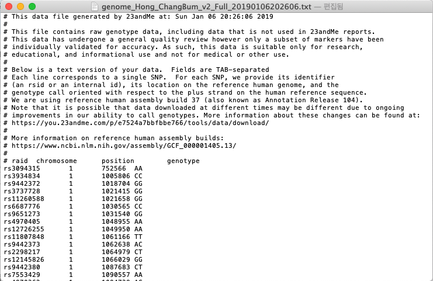
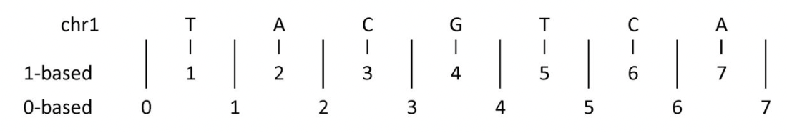

유전체 데이터¶
자신은 누구보다 자신이 잘 안다는 이야기가 있다. 하지만 나 자신을 안다는 것은 여러 면에서 매우 힘든 일이다. MBTI(Myers-Briggs Type Indicator)는 성격유형지표 검사로 자신을 총16가지의 유형으로 판단하는 검사이다. 검사를 해본 사람들은 그동안 자신의 성격에 대해 알려주는 것에 놀라워하기도 한다. <MBTI 검사는 왜 완전히 무의미한가?>
자신을 자신답게 만드는 것 중 하나로 DNA를 들 수 있다. 자신의 DNA에는 가깝께는 부모님에 대한 정보뿐 아니라 나아가 조상에 대한 정보, 질병에 대한 감수성, 키나 몸무게 등 복잡한 형질(trait)등 미처 자신이 인지하지 못하고 있었던 다양한 정보를 담고 있다. DNA를 포함한 유전체(genome)는 자신이 태어나서 죽을 때까지 가지는 자신을 나타내고 그 정보를 대를 물려서 전달할 수 있는 데이터라고 할 수 있다.
지금까지는 유전체 정보는 매우 극소수의 사람들만이 알고 있거나 또는 연구를 위해 정보가 생산되었지만 최근에는 일반 대중들도 DTC(direct-to-consumer) 방식의 유전자검사를 통해 자신이 직접 유전체 정보를 습득할 수 있게 되었다. 해외에서는 이미 수년 전부터 이러한 검사가 가능했지만 국내에서는 이제 막 허용되기 시작했다.
이제 자신을 자신 답게 만들고 또한 대를 물려 전해줄 수 있는 강력한 유전체 정보가 어떠한 의미를 지니고 어떻게 분석할 수 있는지에 대해 알아 보기로 하자.
Note
- 이번 장을 끝마치면 당신은 아래의 3가지에 대해서 배울 수 있다.
- 유전체 데이터의 3가지 종류 (지노타입 데이터, 매핑 데이터, 변이 데이터)
- 각 유전체 데이터의 특성 (마커, 지노타입, 피노타입, 대립유전자)
- 온라인상에 공개된 유전체 데이터에 접근하는 방법
지노타입 데이터¶
지노타입 (genotype)은 유전자형(type)으로 일반적으로 “A라는 지노타입을 가진 경우 B라는 피노타입(phenotype, 표현형)이 나타난다” 와 같이 사용되기도 한다. 사람이라면 모두 부모에게서 각각 유전자를 물려 받게 되며 특정 부분의 지노타입은 AA, AB, BB의 3가지 형태 중 하나를 갖게된다.
예를 들어 머리카락의 곱슬거림(hair curl)이라는 표현형과 관련된 특정 마커(marker)에서의 유전자형은 AA(직모), AB(멋지게 곱슬), BB(완전 곱슬)의 3가지가 존재하며, 부모님이 모두 AA의 지노타입인 경우 그 자손들은 AA, 즉 곱슬머리일 수 밖에 없는 운명이 된다.
Note
곱슬머리는 직모에 대한 우성이기 때문에 곱슬머리가 더 많은 것이 보통이나 성호르몬 등 체질 변화나 모발의 발육 등으로 인한 후천적인 변화로 나타나기도 한다. rs671이라는 마커는 일명 아시안 플러시(아시아 홍조)라고도 불리는 것으로 주로 동아시아권 사람들에게서 나타나는 현상으로 술을 조금만 마셔도 얼굴이 붉어지는 현상으로 ‘G’ allele가 있게 되면 붉어지게 되며 한국인의 30~40%가 ‘G’ allele를 1개 이상 가지고 있다.
- 음주시 얼굴과 몸이 붉어지는것에 관여하는 마커(SNP)의 이름: rs671
- 마커의 위치(genomic location): chromosome 12의 111,803,962번째
- 마커의 genotype과 phenotype과의 관계
- AA: 붉어짐, 식도암 증가
- AG: 붉어짐, 나쁜 숙취, 식도암 위험 증가
- GG: 정상, 정상적인 숙취, 식도암의 정상적인 위험
이러한 정보를 기반으로 우리는 인간에게 존재하는 유전체 정보를 표현하게 되며 일반적으로 이러한 형태의 데이터를 지노타입 데이터라고 한다. 이러한 지노타입 데이터를 표현하는 방법에는 표준이 존재하지는 않지만, 사실상 표준(De Facto Standard)으로 23andMe 라는 회사의 포맷이 널리 통용된다.
{kind=link}
지노타입 데이터는 다양한 방법을 통해 얻을 수 있는데 현재 가장 많이 사용되는 방법이 Genotyping Chip을 이용하는 방법과 NGS(Next-generation Sequencing)를 통해 얻을 수 있다. 첫번째 방법은 특정 영역의 지노타입을 알아내기 위한 방법으로 가장 많이 사용되는 것이 인간유전체 30억개 중 약 90만개 정도를 알아낼 수 있다. 23andMe 역시 Illumina라는 회사의 OminiExpress+ 라는 Genotpying Chip를 통해 데이터를 생산한다.
두 번째 방법은 NGS를 이용하는 방법으로 인간 유전체를 자르고 약 150bp의 짧은 단편 조각들을 읽는다. 이렇게 얻어진 조각들을 원래 위치를 찾기 위해 매핑이라는 과정을 거치게 되는데 이때 데이터의 양을 coverage라는 이름으로 측정 할 수 있다. 매핑 과정을 거친 데이터는 다시 유전변이를 찾는 과정을 거치게 되며 이때 지노타입 정보 또한 얻을 수 있다.
지노타입 빈도와 유전자형 빈도¶
유전적 구성을 알아보기 위해서 DNA에서 유전변이가 발생하는 위치(loucs)에서의 유전형(genotype)이나 대립 유전자형(allele)을 알아야 한다. 하나의 유전형은 2개의 대립 유전자형으로 구성된다. 인구집단에서 사람들이 다음과 같은 유전형을 가지고 있는 경우 유전형의 빈도(genotyupe frequency)와 대립 유전자형 빈도(allele frequency)를 계산할 수 있다.
| 유전형 | 샘플수 |
|---|---|
| AA | 298 |
| AB | 489 |
| BB | 213 |
| 총합 | 1000 |
- AA 지노타입의 빈도 = 298/1000=0.298
- AB 지노타입의 빈도 = 489/1000=0.489
- BB 지노타입의 빈도 = 213/1000=0.213
- A 대립 유전자형 빈도 = (2x298+489)/(2x1000)=0.5425
- B 대립 유전자형 빈도 = (489+2x213)/(2x1000)=0.4575
두 대립 유전자형을 A1, A2라고 하고 빈도를 각각 p, q (p+q=1)라고 할 경우 A/A는 P2, A/B는 2pq, B/B는 q2의 지노타입 frequency를 가진다.
이형접합성(Heterozygosity)¶
특정 위치(locus)에서 유전변이율을 측정하는 방법인 이형접합성은 무작위로 샘플을 선정하여 이들이 가진 대립 유전자형이 이형접합(heterozygous)일 확률이다. 대립 유전자형 빈도(allele frequency)가 p=0.75, q=0.25인 경우
H=1-p2-q2=2p(1-p)
H=1-[(0.75)2+(0.25)2]=0.38
대립 유전자의 빈도가 중간(0.5)인 경우 이형접합성은 가장 큰 값인 0.5를 가진다. 일반적으로 이러한 이형접합성이 높은 마커들은 정보력이 큰 마커로서 의미를 가진다. 즉 사람들이 서로 다른 유전형을 가질 수 있기 때문에 이러한 정보력이 큰 마커들을 활용하여 사람을 식별하는데 등에 사용할 수 있다. 즉 서로 다른 유전형이 나올 확률이 많은 마커들을 사용하는 경우에는 동일한 유전형이 나올 확률이 작아지지만 이형접합성이 낮은 마커들은 동일한 유전형이 나올 확률이 많아지기 때문이다.
나쁜 데이터 1 - 유전체 버전 불일치¶
우리는 얼마전 주소 체계가 도로명주소 형식으로 변경되었다. 건물은 그대로 이나 이 건물을 표시하는 방식이 바뀐것이다. 마찬가지로 유전체 데이터도 우리 몸에 존재하는 유전체 데이터는 그대로 이지만 이를 표시하는 방식은 변경이 된다. 현재 널리 사용되는 유전체 데이터의 버전은 GRCh37(Genome Reference Consortium Human genome build 37) 또는 hg19라는 이름으로 2009년부터 사용되고 있다. 가장 최신의 버전은 GRCh38 버전이지만 아직 널리 사용되고 있지는 않다. 2009년 이전에는 버전 36이 사용되고 있어서 현재 공개된 유전체 데이터가 36인지 37인지 확인할 필요가 있다. 대부분의 유전체 데이터는 공개 시 해당 데이터가 어떠한 버전을 사용해서 표기된 데이터인지를 같이 알려준다. 23andMe 데이터도 2012년도 이전까지는 36버전으로 공개되다가 2012년 8월부터는 37버전으로 변경하여 제공하고 있다.
23andMe의 데이터를 보면 “#”(주석)으로 표시된 부분에 해당 데이터가 37버전으로 작성되어 있음을 표시하고 있다. 현재 rs3094315라는 변이의 위치가 1번 염색체의 752566번째 위치하고 있으나 36버전은 1번 염색체의 742429번째에 위치한다. 이처럼 유전변이를 나타내는 고유의 이름(rs로 시작)은 변하지 않았으나 버전에 따라서 해당 유전변이의 위치 표기법은 다르다.
나쁜 데이터 2 - 개행 문자 처리¶
여기서 다루는 유전체 데이터는 대부분 리눅스 기반의 환경에서 이루어진다. 따라서 윈도우즈에서 편집한 파일을 리눅스로 불러오는 경우 라인의 끝마다 ^M 이라는 문자열이 보이는 경우가 발생한다. 이는 운영체제 마다 개행문자 처리 방법이 조금씩 다르기 때문이다. 따라서 모든 텍스트 파일은 dos2unix 등의 명령어를 통해 파일 형식을 유닉스 파일형식으로 변경하도록 한다.
나쁜 데이터 3 – 유전체 데이터 좌표계¶
유전체 데이터에서 좌표 (coordiantes)는 기본적으로 0-베이스를 기준으로 한다. 즉 시퀀스의 첫번째 기준 점은 0과 1사이에 존재한다. 기본적으로 0-베이스와 1-베이스의 차이는 아래와 같다. 우리가 4번째에 존재하는 ‘G’는 1-베이스 기반에서의 위치는 1이지만 제로-베이스에서는 3-4가 된다.
{kind=link}
나쁜 데이터 4 - 염색체 표기 방법¶
오라일리에서 출판된 “나쁜 데이터 핸드북”을 보면 “나쁜 데이터는 여러분이 일하는 데 방해가 되는 모든 데이터를 일컫는다.”라는 문구가 나온다. 여기에 가장 잘 맞는 데이터 중 하나가 유전체 데이터가 아닐까 생각한다. 앞에서도 보듯이 우선 유전체 데이터는 버전에 따라서 위치 정보가 각각 다르기 때문에 버전 정보를 확인하는 것이 중요하다. 그뿐만 아니라 또 한가지 주의해야 할 것은 바로 염색체의 표기 방법이다. 인간은 1번부터 22번 염색체와 X, Y 염색체와 미토콘드리아 염색체로 구성되어 있다. 바로 이 염색체를 표기하는 방식이 데이터 마다 상이하다. 표시 방식은 염색체 번호 앞에 ‘chr’이라는 접두사를 붙이는 방식과 붙이지 않는 방식의 크게 2가지 방식이 존재하기 때문에 서로 다른 데이터 세트를 비교하거나 하는 경우에는 주의해서 다루어야 한다.
방식1
1,2,3,4,… 21,22,X,Y,MT
방식2
chr1, chr2, chr3, chr4 …chr21, chr22, chrX, chrY, chrM
유전체 데이터 얻기¶
유전체 데이터를 획득할 수 있는 방법은 다음의 3가지 정도로 정리할 수 있다. 해외의 소비자 직접거래 (DTC, Direct-to-consumer) 방식의 유전자 검사 서비스 업체를 이용하는 방법으로 대표적으로 앞서 언급한 23andMe회사가 존재하며 유전자 검사 결과와 지노타입 데이터를 제공한다.
두번째 방법은 국내의 소비자 직접거래 방식의 유전자 검사 서비스 업체를 이용하는 방법으로 각 업체마다 고객에게 직접 지노타입 데이터를 제공하는지는 불확실하므로 직접 문의하여 지노타입 데이터 제공이 가능한지 확인해 봐야 한다. 유전자 검사 서비스 업체는 고객의 지노타입 정보와 그에 따른 피노타입 정보를 결합하여 고객에게 유전자 검사결과를 제공하는 것으로 원시데이터(raw data)에 해당하는 지노타입 데이터에 대한 제공 여부는 업체마다 다르다. 국내 소비자 직접거래 방식의 유전자 검사는 23andMe가 약 50만개의 지노타입 데이터를 제공하는 반면 국내는 50여개 내외의 지노타입 정보를 이용한다.
마지막 방법은 공개된 지노타입 데이터를 이용하는 방법이다. 아직 자신의 유전체 정보가 없는 독자라면 책에서 소개하는 공개된 데이터를 활용하여 데이터를 분석할 수 있다.
Note
지금까지의 유전자검사는 의료기관을 통해서만 가능했다. 의사의 판단에서 유전자 검사가 필요한 경우 유전자검사기관으로 등록된 기관에서만 가능한 것으로 유전자검사기관은 질병관리본부에 어떠한 유전자검사를 수행하는지에 대한 내용을 제출하고 해당 유전자에 대한 검사만 의료기관의 의뢰를 받아 검사가 가능한 구조였다.
개정에 따라 2016년 6월부터는 시행되는 생명윤리 및 안전에 관한 법률에 따르면 “비의료기관이 의료기관 의뢰없이 질병예방 목적의 유전자 검사를 보건복지부장관이 정하는 경우 제한적으로 직접 할 수 있도록 허용” 한다고 개정되어 이제부터는 의료기관을 통하지 않고도 유전자검사기관으로 등록된 민간 기관도 소비자를 대상으로 직접 유전자를 검사할 수 있도록 법이 개정되었다.
다만 모든 유전자에 대한 검사가 가능한 것이 아니라 12개의 검사항목에 42개 유전자에 대해서만 가능하다. 개인이 직접 가능한 검사들은 생활습관 개선과 질병예방 가능한 검사, 과학적 근거가 확보되고 소비자 위해성이 적은 검사로 이루어져 있다.